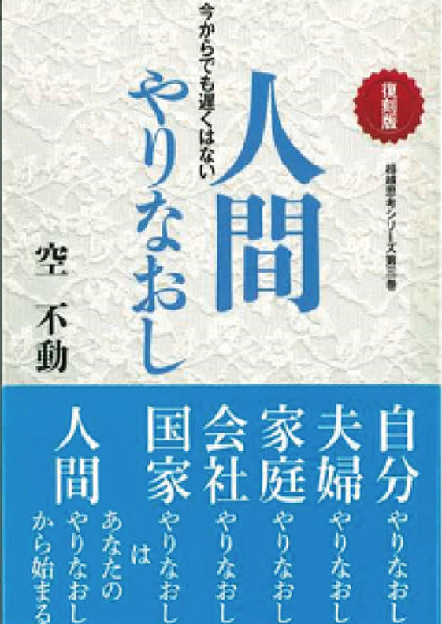

会員サイトの
無料登録
視聴記録やメモを残すための登録です。登録後すぐ、マイページを利用できます。
無料会員のチャット投稿は、管理者の承認後に公開されます。
サイトに無料登録する →自分の歩幅で、共に学ぶ。
一人で始めた学びを、
仲間と続ける実践へ。
本を読み、自分の人生に向き合いたいと思ったとき。
日々の感謝や祈りを、もう一歩深めたいとき。
あなたに合う学びの場を、ここから見つけてください。
本の学びを、日常の実践へ
『人間やりなおしテキスト』を読み、自らの人生を出直し、統一人格を目指したいと願う皆様へ。感謝行・祈りの行・統一行・自明行、そして読書行を、仲間と学びながら日々の暮らしに育てていくためのご案内です。
原典では、同志と共に学び行ずることの意義が説かれています。献文舎・読者連絡室が案内する学びの道筋を、ご自身の志や歩みに合わせてご覧ください。
本ページは、『原本献文舎／人間やりなおしテキスト 復刻版』巻末の案内をもとにした紹介です。会の受付状況・開催内容・特典・費用の現行条件は、申込み前に窓口へご確認ください。

読む・聴く。自分に合う学び方で。
漫画や動画で触れた教えを、さらに深く。書籍をじっくり読む、オーディオブックで聴く。先生の探究の歩みや自明行を、ご自身に合う方法で学べます。
書籍・オーディオブックのボタンは献文舎オンラインストアを別タブで開きます。価格・在庫・音声の形式や利用方法は購入ページでご確認ください。
最初に知っておきたいこと
視聴記録やメモを残すための登録です。登録後すぐ、マイページを利用できます。
無料会員のチャット投稿は、管理者の承認後に公開されます。
サイトに無料登録する →日々の行を続けるためのサポートです。書籍案内では入会金・会費無料。読者連絡室へ申し込み、登録の可否の連絡を受けます。
内容と申込み方法を見る ↓岩根（空不動）先生の直接のご指導を願う方のコースです。所定の条件を満たしたうえで、先生のご許可が必要です。
入会条件を見る ↓サイトに無料登録しても、各会への入会や、参加対象が限定された会への参加資格が自動で付くことはありません。
学びのロードマップ
書籍で案内されている、学びと参加の道筋です。
感謝・祈り・統一行を習慣に。
基礎となる行を蓄積する。
志や個性に合わせて、
学びの場を広げる。
学ぶ姿勢を深め、
先生との師弟関係を願う。
自動的な進級制度ではありません。各会の条件や受付状況を確認しながら進みます。
STEP 1 · 基礎を育てる
日々の実践を、
一人で抱え込まずに続ける。
『人間やりなおし』『自明行』に関心を持つ方のために、感謝行・祈りの行・統一行の蓄積と習慣化を支えるクラブとして紹介されています。
原典では、自明行は重要な行である一方、初期段階からそれだけに注力すると「自閉行」「自迷行」と呼ばれる自己満足に陥るおそれがあると説明されています。
「急がば回れ」の姿勢で、まず感謝行・祈りの行・統一行を重ねる。正しい苦しみの自覚に至り、自明行に向き合う時期に備えることを大切にしています。
祈り・統一行の実践ガイドを見る →毎月の回数や時間を、自分自身で設定します。誰かの数字に合わせる必要はありません。
書籍では、メールやWeb、メーリングリスト等で月1回報告する方法が案内されています。閲覧のみの参加も紹介されています。
記録を共有するだけでなく、超越意識の中でも協力し合い、支え合って実践するという考え方です。
特典：統一行の実践と習慣化を支える「柏手入りCD」の贈呈が紹介されています。現在の提供状況・媒体は申込み時にご確認ください。
先輩同志の例：祈り月2万回以上、統一行月60時間などの蓄積例が記載されています。参加条件や、全員に求める目標ではありません。
読者連絡室へメール・FAX・郵送で提出し、確認後に登録の可否の連絡を受ける流れです。書籍に記載された項目は以下の6つです。
まずは下の窓口で、現在の受付状況・提出方法をご確認ください。
レインボークラブについて相談する ↓発展コース · 学びの場を広げる
一定期間の蓄積ののち、自然（じねん）の流れの中で展開する学習の場として紹介されています。
書籍では、月1回・日曜午前に都内会議室で開催される会が案内されています。
このサイトで紹介しているZoom瞑想会とは、開催形式・案内が異なります。現在の会場開催については窓口へご確認ください。
サイトのZoom瞑想会の案内 →先輩同志による勉強会が紹介されています。お近くの会や参加方法は窓口へご相談ください。
不定期開催の特別セミナーが紹介されています。日程・参加対象・費用は、その都度の開催案内をご確認ください。
STEP 2 · 上級会員コース
学ぶ姿勢を深め、
先生の直接のご指導を願う方へ。
『人間やりなおし』の決意を持ち、先生の直接のご指導を頂きたいと願う会員の集まりとして紹介されています。一部の欠点だけを直すのではなく、自分の在り方全体に向き合うため、覚悟・積極性・根気を大切にするコースです。
これらの条件を満たしたうえで、岩根先生のご許可が必要です。
対象となる著書・過去メールの範囲と閲覧方法は、読者連絡室へお尋ねください。
修行上の重要ポイントや導きのメッセージを受け取り、実践を深めることが案内されています。書籍の案内では、月2回のリドゥメールも紹介されています。
現在の配信内容・頻度は入会時にご確認ください。サイトのREDO MAILは、利用対象として登録された方が閲覧できます。
原典では、真剣さとともに、楽しく、有意義に、伸び伸びと学ぶ「感謝の世界」として会の雰囲気が紹介されています。
「発足以来15年以上」という記載は、書籍掲載時点の説明です。
会費・手続きについて：本ページでは、やりなおし会の会費を一律の金額で案内していません。入会前に、現在の金額・支払方法・条件を窓口へご確認ください。
やりなおし会について相談する ↓申込みの前に、気になることを。
希望する会と、確認したいことを添えてご相談ください。
受付状況や提出方法を確認してから、正式な申込みへ進めます。
連絡先は献文舎公式サイトの掲載内容を参照（2026年9月16日確認）。会の申込みについて担当窓口へのご案内をお求めください。
書籍の案内には「献文舎・読者連絡室」、メール kembunsha@yarinaoshi.com、郵便窓口「南海東京ビル1F SP865」と記載されています。現在の利用可否を確認できていないため、このページのメール作成ボタンには公式サイト掲載のアドレスを使用しています。
この画面から直接送信はされません。文面を作り、メールアプリで確認して送信できます。
メールアプリが開かない場合は、文面をコピーして普段のメールからお送りください。これだけでは申込みは完了しません。
入力内容はこのページからサーバーに送信・保存しません。住所などの申込み情報は、窓口からの案内に沿ってご提出ください。
今日できる、小さな一歩を。
まだ入会を決めていなくても大丈夫です。
まずは無料で読み、実践し、気づきを残してみませんか。